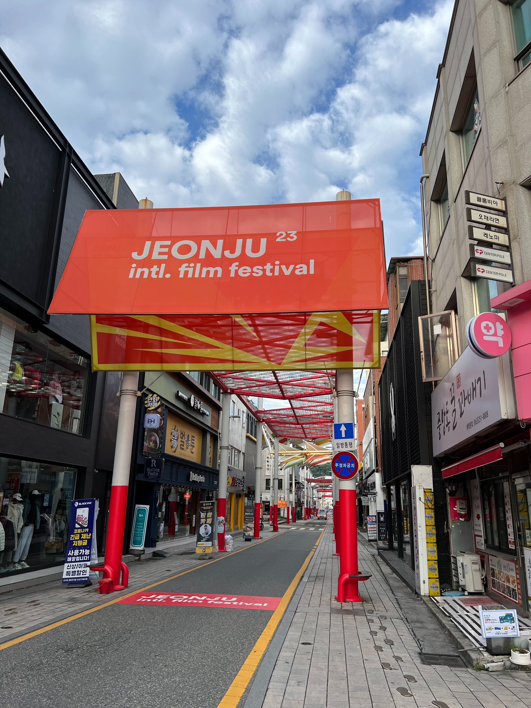

나의 탄생
1. 2002년생

나는 2002년생이다.
사람들은 보통 우리들을 보고 월드컵베이비라고 부른다.
근데 사실 02년생들은 월드컵을 보지도 못 했을 거다 ㅋㅋ
2. 7월 9일
나는 7월 9일에 태어났다.
그래서 나는 79라는 숫자를 좋아한다.
여담으로 내 인스타 아이디에도 79라는 숫자가 들어간다.
여기
는 내 인스타 주소이다.
3. 전주

전주는 내가 태어난 고향이다.
나는 전주에서 태어나 이 곳에서 22년째 살아가고 있다.
사실, 나는 전주가 좋고 크게 벗어날 생각은 딱히 없다.
뭐 .. 내 일을 위해 전주를 떠나야한다면 어쩔 수 없지만 ..